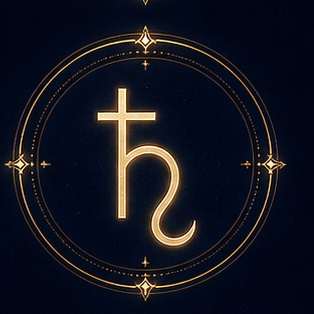

Энергия
Время, закон, ответственность, ограничения, дисциплина, карма.
Характер энергии
Серьёзность, осторожность, терпение, потребность в порядке.
Влияние на жизнь
Сатурн обозначает зоны испытаний и страхов, в которых через труд, границы и опыт формируется внутренняя опора и мастерство.
В ресурсе
Надёжность, выдержка, профессионализм, мудрые границы.
В тени
Жёсткость, пессимизм, подавление, страх ошибки и перемен.
Формула
«Я строю и отвечаю».
Описание носит символический характер и не является научным объяснением личности или судьбы. Проявление планеты в реальной карте зависит от знака, дома и аспектов.